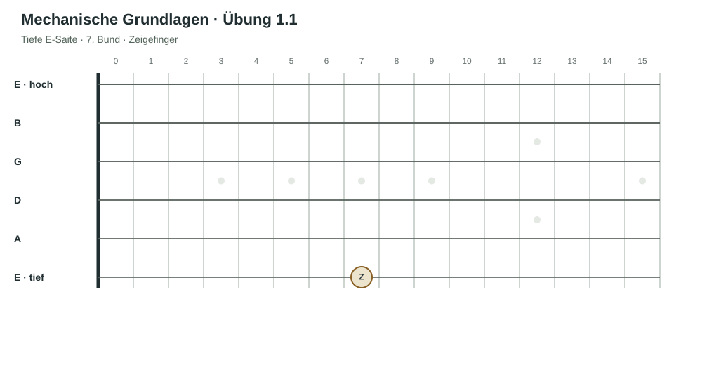
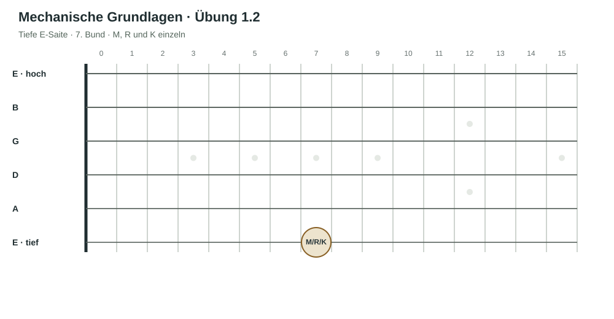
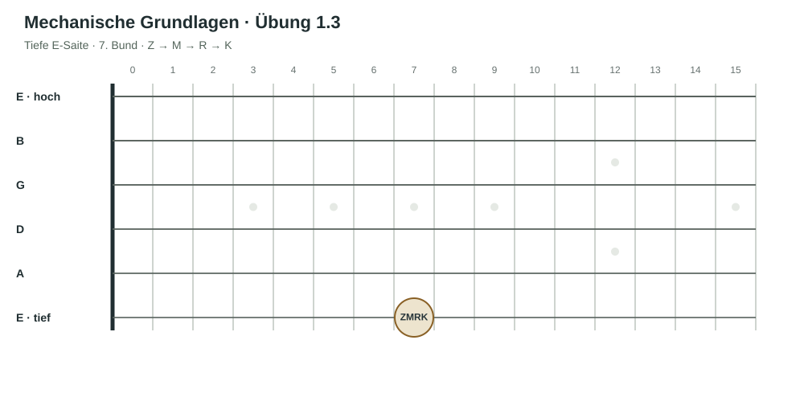
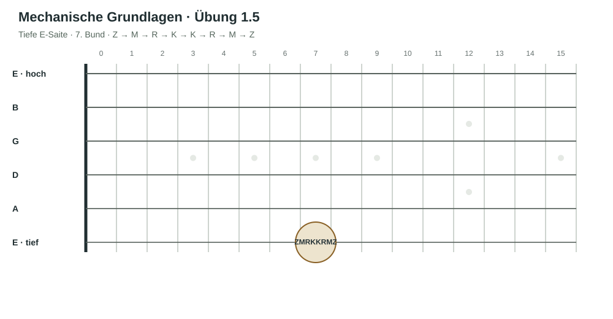
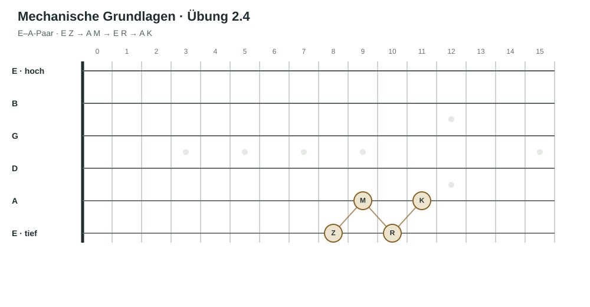
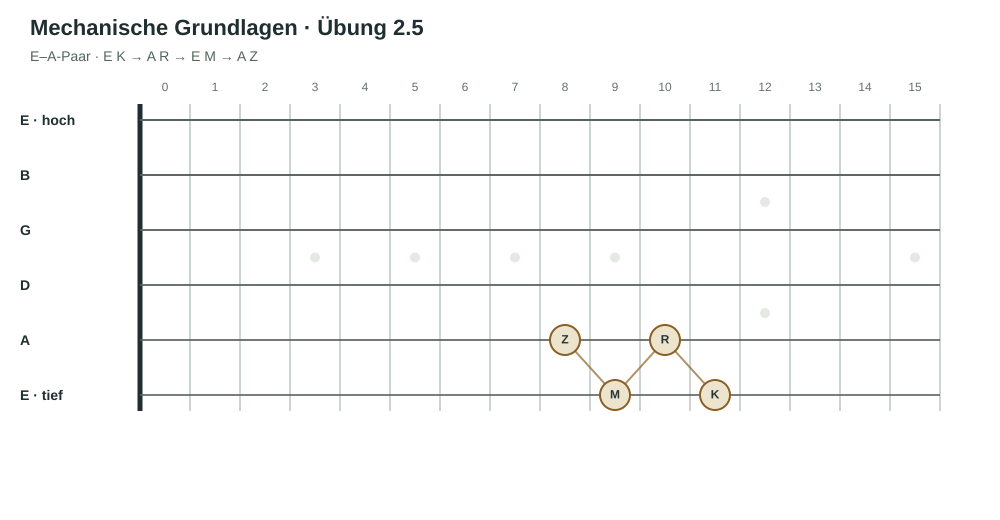
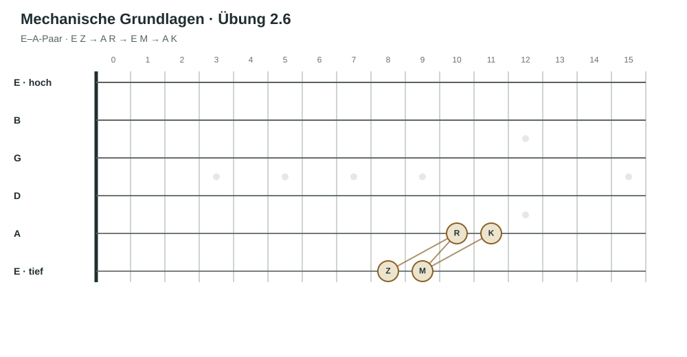
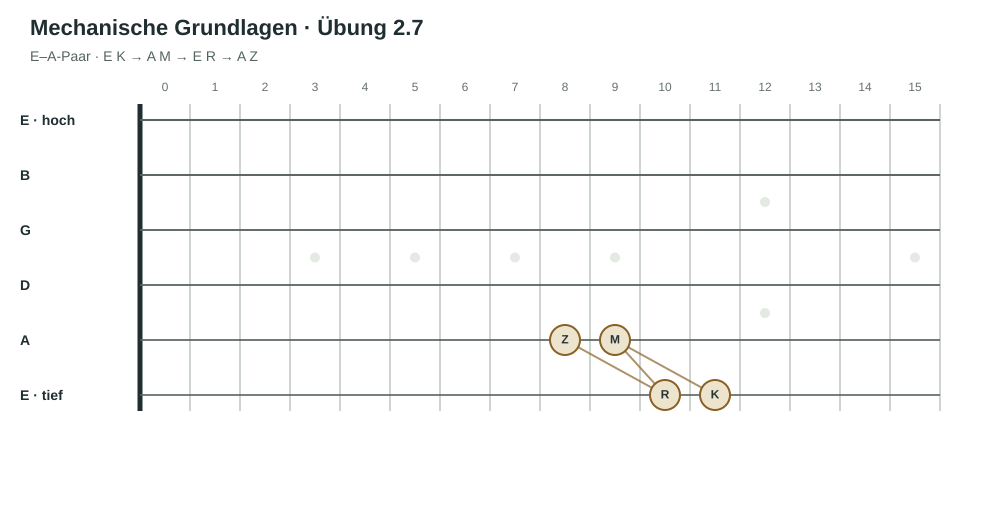

Worum es geht
Vom Prinzip zur Bewegung.
Mechanische Grundlagen entstehen nicht durch möglichst viel Druck oder Tempo. Du lernst, wie du deine Finger gezielt einsetzt, unnötige Spannung vermeidest und eine Bewegung langsam aufbaust, bis sie klar und gleichmäßig gelingt.
- Die drei Spielprinzipien beim Greifen anwenden.
- Die vier Greiffinger einzeln und in Reihenfolgen kennenlernen.
- Ein festes Finger-pro-Bund-Muster über die Saiten bewegen.
Ein Kapitel durch den Kurs
Kapitelübersicht.
Kapitel 01Prinzipien und SpinneVerfügbar
Du lernst die Grundprinzipien kennen, probierst deine Finger einzeln aus und überträgst das feste Finger-pro-Bund-Muster auf alle sechs Saiten.
- Die Prinzipien
- Die Finger einzeln und in Reihenfolgen
- Die Spinne / Fingerspinne
Kapitel 01 · Direkt im Kurs
Prinzipien und Spinne
Der Kurs macht die Prinzipien des Gitarrenspiels klar und zeigt dir, wie du darauf aufbauend die mechanischen Grundlagen des Melodiespiels entwickelst.
Lektion 01
Drei Prinzipien des Greifens.
1. Nah am Bundstäbchen greifen
Setze den Finger so nah wie möglich an das Bundstäbchen, ohne darauf zu liegen. So kann die Saite mit wenig Kraft sauber schwingen.
2. Nur so fest drücken wie nötig
Finde den kleinsten Druck, mit dem der Ton klar klingt. Mehr Kraft ist nicht automatisch besser.
3. Wenn etwas nicht gelingt, finde den Grund
Vielleicht ist der Fingersatz oder die Melodie noch nicht verstanden. Eine Melodie hast du verstanden, wenn du sie singen kannst. Vielleicht fehlt dir noch eine Spieltechnik, oder du spielst zu schnell. Finde heraus, was davon zutrifft, und übe genau diesen Punkt langsamer.
Lektion 02
Die Finger einzeln kennenlernen.
Bleib für diese ersten Übungen auf der tiefen E-Saite im 7. Bund. Setze jeweils nur den genannten Finger ein. Greife nah am Bundstäbchen und verwende so wenig Druck wie nötig.
Übung 1.1Mit dem Zeigefinger greifen
Setze Z in den 7. Bund der tiefen E-Saite und spiele den Ton. Richte deine Aufmerksamkeit auf die Fingerposition und den nötigen Druck.

Übung 1.2Die anderen Finger einzeln testen
Wiederhole dasselbe Experiment im selben Bund nacheinander mit M, R und K. Vergleiche, wie sich der nötige Druck und das Gefühl in der Hand verändern.

Übung 1.3Z–M–R–K vorwärts
Spiele die Note im 7. Bund langsam nacheinander mit Z, M, R und K. Wenn es sich gut anfühlt, schließe die Augen und achte bewusst auf die Druckunterschiede.

Übung 1.4K–R–M–Z rückwärts
Spiele dieselbe Folge in umgekehrter Reihenfolge. Halte Tempo und Druck aufmerksam unter Kontrolle.
Übung 1.5Vorwärts und rückwärts verbinden
Spiele Z–M–R–K–K–R–M–Z. Halte die Folge ruhig und gleichmäßig. Wenn die Bewegung unsauber wird, verlangsame sie.

In der ersten Woche: Mache diese Übungen einmal am Tag und mit Bedacht. Es geht darum, die Bewegung und den nötigen Druck kennenzulernen, nicht darum, möglichst viele Wiederholungen zu schaffen.
Lektion 03
Die Spinne · Fingerspinne.
Bei der Spinne bekommt jeder Finger zunächst seinen eigenen Bund. Diese Zuordnung bleibt bestehen, während die Finger von Saite zu Saite wechseln. So lernst du, die Bewegung gleichmäßig und langsam über das Griffbrett zu führen.
Ein Finger pro Bund
- Z – Zeigefinger: 8. Bund
- M – Mittelfinger: 9. Bund
- R – Ringfinger: 10. Bund
- K – kleiner Finger: 11. Bund
Die Finger behalten ihre Bünde und wechseln nur die Saite. Spiele jeden Ton gleichmäßig und langsam. Lass die Bewegung erst sicher werden, bevor du das Tempo erhöhst.
Übung 2.1 · Aufwärts
Beginne auf der tiefen E-Saite: Z–M–R–K. Gehe dann zur A-, D-, G- und B-Saite und schließlich zur hohen E-Saite. Auf jeder Saite spielst du dieselbe Folge, ohne die Bundzuordnung der Finger zu verändern.

Übung 2.2 · Abwärts
Beginne auf der hohen E-Saite mit K–R–M–Z. Gehe danach Saite für Saite zurück bis zur tiefen E-Saite. Jeder Finger bleibt in seinem Bund.

Übung 2.3 · Hin und zurück
Spiele die Spinne einmal aufwärts und direkt anschließend abwärts. Achte auf gleichmäßige Abstände zwischen den Tönen und auf unnötige Spannung in der Hand.

Die Saitenpaare
Für die nächsten Übungen wechselst du bei jeder Note zwischen zwei benachbarten Saiten. Gehe die Paare der Reihe nach durch: tiefe E–A, A–D, D–G, G–B und B–hohe E. Die Finger bleiben ihren Bünden zugeordnet: Z im 8., M im 9., R im 10. und K im 11. Bund.
Übung 2.4Abwechselnd über zwei Saiten
Spiele auf jedem Saitenpaar die Folge erste Saite Z · zweite Saite M · erste Saite R · zweite Saite K.
Auf dem tiefen E–A-Paar heißt das: E Z – A M – E R – A K. Wiederhole dieselbe Folge auf A–D, D–G, G–B und B–hohe E.

Übung 2.5Die Folge von K aus beginnen
Spiele auf jedem Saitenpaar: erste Saite K · zweite Saite R · erste Saite M · zweite Saite Z.
Auf E–A: E K – A R – E M – A Z. Gehe danach wieder die übrigen benachbarten Saitenpaare durch.

Übung 2.6Neue Vorwärtsfolge
Spiele auf E–A: E Z – A R – E M – A K. Wiederhole diese Folge auf jedem nächsten Saitenpaar bis B–hohe E.

Übung 2.7Die Folge rückwärts beginnen
Spiele auf E–A: E K – A M – E R – A Z. Wiederhole die Folge ebenfalls auf allen benachbarten Saitenpaaren.

Auch diese Folgen sind mechanische Muster, keine Melodien. Spiele gleichmäßig und langsam. Konzentriere dich auf Fingerbewegung, Saitenwechsel und den nötigen Druck – nicht darauf, eine musikalische Spannung oder Auflösung zu hören.
Die Spinne ist eine Übung für langsame, bewusste Koordination. Saubere, lockere Bewegungen haben Vorrang vor Tempo.